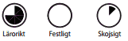
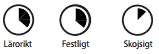

Ange vecka
Tid: 07.00 - 18.00. Plats: Folkets park, Campushallen, universitetet.
Idag är det dags för minus att träffa andra minus och faddrar på parkeringen till Folkets park kl 7.00. Här kommer minus träffa D-group och CC som kommer lära minus att sjunga sin nollesång på yppersta och fagraste sätt. Däreft er kommer minus att tåga vidare till Campushallen för att bli underhållna och se STABEN. Superskojsigt, minus!
Däreft er kommer minus att vandra mot universitetet. Därför är det dumt om minus har sin cykel med sig, då minus inte kommer att cykla. STABEN rekommenderar därför att minus lämnar cykeln hemma. Resten av dagen kommer minus att bli uppropad, indelad, tilldelad, föreläst för och utfrågad. Uppropad för att universitetet ska se så att minus är där minus bör vara, Linkeboda ju, indelad för att minus ska få en klass, föreläst för att minus ska lära sig saker och utfrågad för att minus ska ha det roligt i nolle-p. Minus har en lång dag framför sig, så minus bör vara väl utvilad och dessutom ta med sig en frukt eller smörgås.
Tid: 08:00 - 01:00. Plats: universitetet, Viagraparken, Kårallen
Idag kommer minus att få en nollegrupp och träffa sina toksnälla faddrar. Eft er lunchen kommer minus att lära sig att hitta på universitetet. Minus bör inte gå vilse ju! När minus har lärt sig var man inte ska vara så är det dags att bege sig till där minus bör vara.
Aristocats har då sin första av tre föreläsningar. I kursen TAEN33 Caps kommer Aristocats lära minus konsten att capsa – att kasta prick med små runda objekt. Aristocats kommer att berätta allt minus behöver veta, forskningen, reglerna och rekorden. När minus har lärt sig hur man capsar är det dags att testa sina nyvunna kunskaper i kursen. Detta sker genom del två: TAEN33 Caps – en praktisk laboration. Efter minus är godkänd på laborationen kan minus fortsätta det roliga i det kejserliga palatset Kårallen. Där kan minus skaka sina lurviga!
Tid: 08:00 - 21:00. Plats: Universitetet, fotbollsplan vid B-huset.
Idag kommer D-minus att lära sig att räkna och IT-minus lära sig att lära på rätt sätt. Under lunchen kommer Ling-sektionen att hålla sin lunchtävling Packling.
Sedan återkommer Aristocats med en föreläsning, på denna får minus lära sig allt om öl och häfv. När minus kan allt har minus ett ypperligt tillfälle att umgås med sina nollegrupper för att med faddrar planera inför minus nolleuppdrag. Om minus känner sig förberedd nog kan minus möta upp andra minus för brännboll och mat ju.

Tid: 08:00 - 21:00. Plats: Universitetet
Idag är det fredag...
Tid: 10:00 - 01:00. Plats: Svartån (eller vad det nu heter)
HAJK!!!
Tid: 08:00 - . Plats: Hemma.
Sova?
Detta är minus sjunde dag.
Idag får minus gå på STABENs superskojsiga disco.
Detta är minus åttonde dag.
Idag kan minus kolla på cool tävling i Märkesbacken.
Detta är minus nionde dag.
Idag kan minus gå på München Hoben, superskojsigt.
Detta är minus fjortonde dag.
Idag får minus gå på STABENs all-star möte.
Där kan minus träffa STABEN STAB, STABEN STABEN STAB osv.
Detta är minus femtonde dag.
Idag ska några minus redovisa sina nolleuppdrag, missa inte detta.
Detta är minus sextonde dag.
Idag kan minus gå på Kalasmottagningen.